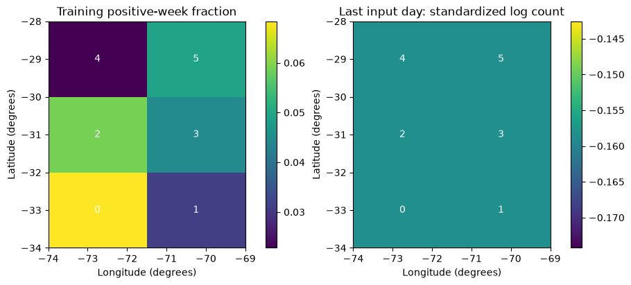
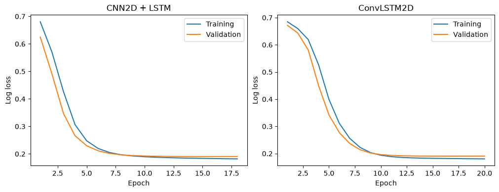
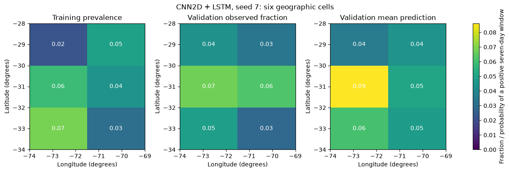
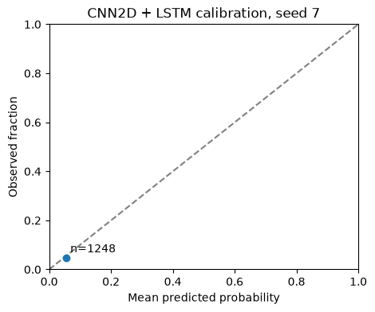

From regional histories to daily maps
Spatial extension: CNN2D + LSTM and ConvLSTM2D
Download prepared notebook Open Colab to upload the notebook Notebook with example outputs Sensitivity to initialization All tutorials
Example results use one training run per neural model, seed 7. See Environment and setup.
CNN2D + LSTM and ConvLSTM2D
Question. Given the previous 30 days of catalogue information, what is the probability of at least one M ≥ 5 event in each of six geographic cells during the following seven days?
We retain the locations that a regional count would discard. Both models use the same daily maps, targets and chronological partitions. The distinction is how they combine information across space and time.
- CNN2D + LSTM: extract spatial features from each daily map, then read the sequence of extracted features.
- ConvLSTM2D: retain a spatial hidden state while processing successive daily maps.
Each model uses one training run, seed 7. The three-seed map comparison examines sensitivity to initialization. Run the cells in order; the preparation permits independent study after the 30-minute presentation and 30-minute temporal practical.
Interpretation. These are retrospective catalogue-occurrence probabilities, not predictions of shaking or damage. Validation covers 2017–2020 and also controls early stopping. The previously inspected 2021–2025 interval is not evaluated and cannot serve as a new independent test. The frozen catalogue contains revised records; historical real-time availability has not been reconstructed.
Preparation A. Load the tools
Select a Python CPU runtime in Colab. If imports are unavailable, run %pip install tensorflow==2.19.1 keras==3.15.1 pandas scikit-learn matplotlib, restart the runtime, and begin again. See the environment and execution notes for the supplied environment and verification status.
The examples use seed 7. Record your software versions and hardware, and note any numerical differences from the supplied results. A single run does not measure sensitivity to initialization.
Code block 1 · Run the matching prepared-notebook cell in order. For self-study, copy into a new Colab code cell.
import io
import hashlib
import zipfile
import time
from pathlib import Path
from urllib.request import urlopen
import numpy as np
import pandas as pd
import matplotlib.pyplot as plt
import tensorflow as tf
from tensorflow import keras
from IPython.display import display
SEED = 7
LOOKBACK = 30
HORIZON = 7
EPOCHS = 20
BATCH_SIZE = 64
print("TensorFlow:", tf.__version__, "Keras:", keras.__version__)Example output — seed 7
TensorFlow: 2.19.1 Keras: 3.15.1
Preparation B. Read the frozen catalogue
The data pack is pinned to a Git commit. SHA-256 checks identify the exact ZIP and catalogue, and the CSV is read into memory.
Training covers 2001–2016 and validation covers 2017–2020. The catalogue contains revised records, so this is a retrospective exercise. The previously inspected 2021–2025 period is not evaluated here.
For offline use, upload the frozen data pack as statsei14-data-pack.zip in the working directory before running this cell. Otherwise the cell downloads the pinned ZIP. Both paths check the same SHA-256 values.
Code block 2 · Run the matching prepared-notebook cell in order. For self-study, copy into a new Colab code cell.
PACK_URL = "https://raw.githubusercontent.com/FranPlaza/FranPlaza.github.io/0e7a7e4b1c38490018f11b26170fe6a87e4997f9/courses/statsei14/downloads/data-pack.zip"
PACK_SHA256 = "0ee5d4d71aafa19023fdb1ee6f289a11e7fd7f4ed88ad7a91032ca24505d10a2"
CATALOGUE_SHA256 = "16e9b731a5b407d75a2321d3d0d2c889542e8223a9ee4fe81efe624eb6b166d2"
local_pack = Path("statsei14-data-pack.zip")
if local_pack.exists():
pack_bytes = local_pack.read_bytes()
print("Data source: local frozen pack")
else:
with urlopen(PACK_URL, timeout=60) as response:
pack_bytes = response.read()
print("Data source: pinned download")
assert hashlib.sha256(pack_bytes).hexdigest() == PACK_SHA256
with zipfile.ZipFile(io.BytesIO(pack_bytes)) as archive:
csv_bytes = archive.read("data/frozen/usgs_chile_2000_2025.csv")
assert hashlib.sha256(csv_bytes).hexdigest() == CATALOGUE_SHA256
events = pd.read_csv(io.BytesIO(csv_bytes))
events["time"] = pd.to_datetime(events["time"], utc=True)
events = events.sort_values("time").reset_index(drop=True)
display(events[["time", "latitude", "longitude", "mag"]].head())Example output — seed 7
Data source: local frozen pack
| time | latitude | longitude | mag | |
|---|---|---|---|---|
| 0 | 2000-01-07 11:49:11.720000+00:00 | -28.495 | -69.196 | 4.0 |
| 1 | 2000-01-08 11:43:58.150000+00:00 | -31.017 | -71.339 | 4.4 |
| 2 | 2000-01-11 13:16:34.420000+00:00 | -30.747 | -71.319 | 4.5 |
| 3 | 2000-01-18 17:12:18.360000+00:00 | -31.630 | -71.451 | 4.9 |
| 4 | 2000-01-19 01:24:00.150000+00:00 | -31.440 | -71.384 | 3.8 |
Preparation C. Select the region and define the daily calendar
Input events satisfy M ≥ 4.5. The future occurrence target uses M ≥ 5. We retain every calendar day, including days without events. The first year supplies history for the earliest training windows.
The three channels are log(1 + count), maximum magnitude excess above 4.5, and presence. Presence distinguishes an empty day from a day containing an event exactly at the input threshold.
Code block 3 · Run the matching prepared-notebook cell in order. For self-study, copy into a new Colab code cell.
START = pd.Timestamp("2000-01-01", tz="UTC")
END = pd.Timestamp("2026-01-01", tz="UTC")
days = pd.date_range(START, END - pd.Timedelta(days=1), freq="D")
FEATURES = ["log_count", "max_magnitude_excess", "has_event"]
inside = events["latitude"].between(-34.0, -28.0)
inside &= events["longitude"].between(-74.0, -69.0)
in_time = (events["time"] >= START) & (events["time"] < END)
selected = events.loc[inside & in_time & (events["mag"] >= 4.5)].copy()
selected["date"] = selected["time"].dt.floor("D")
print("Input events:", len(selected))Example output — seed 7
Input events: 2121
Preparation D. Keep the same six geographic cells
Three latitude bands and two longitude bands form a 3 × 2 grid. Row zero is south; column zero is west. A boundary event goes into the cell to its north/east, except at the outer boundary, where it stays in the last cell. These are geographic bins, not fitted tectonic provinces.
The group index lists every day and every cell. Reindexing inserts empty combinations before reshaping them into maps.
Code block 4 · Run the matching prepared-notebook cell in order. For self-study, copy into a new Colab code cell.
LAT_EDGES = np.array([-34.0, -32.0, -30.0, -28.0])
LON_EDGES = np.array([-74.0, -71.5, -69.0])
N_ROWS, N_COLS = 3, 2
selected["row"] = np.searchsorted(LAT_EDGES, selected["latitude"], side="right") - 1
selected["col"] = np.searchsorted(LON_EDGES, selected["longitude"], side="right") - 1
selected["row"] = selected["row"].clip(0, N_ROWS - 1)
selected["col"] = selected["col"].clip(0, N_COLS - 1)
cell_index = pd.MultiIndex.from_product(
[days, range(N_ROWS), range(N_COLS)], names=["date", "row", "col"]
)
grouped = selected.groupby(["date", "row", "col"])
counts = grouped.size().reindex(cell_index, fill_value=0)
counts = counts.to_numpy(dtype="float32").reshape(len(days), N_ROWS, N_COLS)
max_excess = (grouped["mag"].max() - 4.5).reindex(cell_index, fill_value=0)
max_excess = max_excess.to_numpy(dtype="float32").reshape(len(days), N_ROWS, N_COLS)
larger_events = selected.loc[selected["mag"] >= 5.0]
target_counts = larger_events.groupby(["date", "row", "col"]).size()
target_counts = target_counts.reindex(cell_index, fill_value=0)
target_counts = target_counts.to_numpy(dtype="float32").reshape(len(days), N_ROWS, N_COLS)
daily_grid_raw = np.stack([
np.log1p(counts), max_excess, (counts > 0).astype("float32")
], axis=-1).astype("float32")
assert counts.sum() == len(selected)
print("Daily maps (days, rows, columns, channels):", daily_grid_raw.shape)Example output — seed 7
Daily maps (days, rows, columns, channels): (9497, 3, 2, 3)
Preparation E. One Monday becomes one learning example
At origin t, take inputs from [t − 30 days, t) and the outcome from [t, t + 7 days). The Python slices below implement those intervals directly. We omit target weeks that cross a partition boundary.
Only origins through 2020 are built. Weekly targets do not overlap, although input histories share days.
Code block 5 · Run the matching prepared-notebook cell in order. For self-study, copy into a new Colab code cell.
VAL_START = pd.Timestamp("2017-01-01", tz="UTC")
TEST_START = pd.Timestamp("2021-01-01", tz="UTC")
candidate_origins = pd.date_range("2001-01-01", "2020-12-31", freq="W-MON", tz="UTC")
histories, outcomes, kept_origins = [], [], []
for origin in candidate_origins:
i = days.get_loc(origin)
target_end = origin + pd.Timedelta(days=HORIZON)
boundary = VAL_START if origin < VAL_START else TEST_START
if i < LOOKBACK or target_end > boundary:
continue
history = daily_grid_raw[i - LOOKBACK:i]
future_counts = target_counts[i:i + HORIZON]
outcome = (future_counts.sum(axis=0) > 0).astype("int32")
histories.append(history)
outcomes.append(outcome)
kept_origins.append(origin)
origins = pd.DatetimeIndex(kept_origins)
raw_grid = np.stack(histories)
y_grid = np.asarray(outcomes, dtype="int32")
train_mask = origins < VAL_START
val_mask = origins >= VAL_START
assert (origins[train_mask] + pd.Timedelta(days=HORIZON) <= VAL_START).all()
assert (origins[val_mask] + pd.Timedelta(days=HORIZON) <= TEST_START).all()
print("Training examples:", train_mask.sum(), "Validation examples:", val_mask.sum())
print("One input:", raw_grid[0].shape, "One outcome:", y_grid[0])Example output — seed 7
Training examples: 834 Validation examples: 208 One input: (30, 3, 2, 3) One outcome: [[1 0] [1 0] [0 0]]
Preparation F. Estimate scaling from training histories
Estimate one mean and one standard deviation per channel from the training windows. A historical day can contribute to several overlapping windows. The six geographic cells share these channel-specific scaling parameters. Apply these training estimates to all validation histories. Validation has no role in estimating the scaling parameters.
Code block 6 · Run the matching prepared-notebook cell in order. For self-study, copy into a new Colab code cell.
grid_mean = raw_grid[train_mask].mean(axis=(0, 1, 2, 3), dtype=np.float64)
grid_scale = raw_grid[train_mask].std(axis=(0, 1, 2, 3), dtype=np.float64)
grid_scale = np.where(grid_scale > 0, grid_scale, 1.0)
X_grid = ((raw_grid - grid_mean) / grid_scale).astype("float32")
assert np.isfinite(X_grid).all()
display(pd.DataFrame({
"channel": FEATURES, "training_mean": grid_mean, "training_sd": grid_scale
}))Example output — seed 7
| channel | training_mean | training_sd | |
|---|---|---|---|
| 0 | log_count | 0.022593 | 0.142629 |
| 1 | max_magnitude_excess | 0.010133 | 0.094568 |
| 2 | has_event | 0.028624 | 0.166747 |
Read one spatial history
The grid has three latitude bands and two longitude bands. Row zero is the southern band; column zero is the western band. Cell IDs increase west to east within a row, then south to north. These rectangles provide a simple teaching representation; they are not inferred tectonic regions and do not have equal physical areas.
For each forecast origin, X_train contains 30 maps × 3 rows × 2 columns × 3 channels. Its target is a 3 × 2 binary map. Several cells may contain an event in the same target week, or all may be zero.
We keep these dimensions visible throughout model fitting. Flattened six-cell arrays are used only to display tables later.
Code block 7 · Run the matching prepared-notebook cell in order. For self-study, copy into a new Colab code cell.
N_CELLS = N_ROWS * N_COLS
X_train = X_grid[train_mask].astype("float32")
X_val = X_grid[val_mask].astype("float32")
y_train = y_grid[train_mask].astype("float32")
y_val = y_grid[val_mask].astype("float32")
validation_origins = origins[val_mask]
print("Training histories:", X_train.shape)
print("Training targets: ", y_train.shape)
print("Validation histories:", X_val.shape)
print("Validation targets: ", y_val.shape)
lat_centres = (LAT_EDGES[:-1] + LAT_EDGES[1:]) / 2
lon_centres = (LON_EDGES[:-1] + LON_EDGES[1:]) / 2
cell_table = pd.DataFrame({
"cell": np.arange(N_CELLS),
"latitude": np.repeat(lat_centres, N_COLS),
"longitude": np.tile(lon_centres, N_ROWS),
"training_positive_weeks": y_train.sum(axis=0).ravel().astype(int),
"training_prevalence": y_train.mean(axis=0).ravel(),
})
display(cell_table)Example output — seed 7
Training histories: (834, 30, 3, 2, 3) Training targets: (834, 3, 2) Validation histories: (208, 30, 3, 2, 3) Validation targets: (208, 3, 2)
| cell | latitude | longitude | training_positive_weeks | training_prevalence | |
|---|---|---|---|---|---|
| 0 | 0 | -33.0 | -72.75 | 57 | 0.068345 |
| 1 | 1 | -33.0 | -70.25 | 26 | 0.031175 |
| 2 | 2 | -31.0 | -72.75 | 49 | 0.058753 |
| 3 | 3 | -31.0 | -70.25 | 37 | 0.044365 |
| 4 | 4 | -29.0 | -72.75 | 19 | 0.022782 |
| 5 | 5 | -29.0 | -70.25 | 41 | 0.049161 |
The first map below shows the fraction of training weeks with a positive outcome in each cell. The second shows the last input day for the first training origin. Its colours represent a standardized input channel, not raw counts. Small numbers of positive weeks limit how much a model can learn for a cell.
Discuss: What geographic information would disappear if these six daily values were reduced to one regional count?
Code block 8 · Run the matching prepared-notebook cell in order. For self-study, copy into a new Colab code cell.
training_prevalence = y_train.mean(axis=0)
example_day = X_train[0, -1, :, :, 0]
fig, axes = plt.subplots(1, 2, figsize=(9, 4), constrained_layout=True)
fields = [training_prevalence, example_day]
titles = ["Training positive-week fraction", "Last input day: standardized log count"]
for ax, field, title in zip(axes, fields, titles):
image = ax.pcolormesh(LON_EDGES, LAT_EDGES, field, cmap="viridis", shading="flat")
for cell in range(N_CELLS):
row, column = divmod(cell, N_COLS)
ax.text(lon_centres[column], lat_centres[row], str(cell),
ha="center", va="center", color="white")
ax.set(title=title, xlabel="Longitude (degrees)", ylabel="Latitude (degrees)")
fig.colorbar(image, ax=ax)
plt.show()Example output — seed 7

A reference forecast before neural networks
Predict each cell’s training prevalence for every validation week. This reference captures persistent differences between cells without adapting to the preceding 30 days. It uses no validation labels to fit its probabilities.
Brier score is the mean squared error of the probabilities. Log loss gives a larger penalty to confident incorrect probabilities. Smaller values are better for both. Here we average over all validation weeks and all six cells; these are marginal probability scores, not a joint spatial likelihood.
Code block 9 · Run the matching prepared-notebook cell in order. For self-study, copy into a new Colab code cell.
p_baseline = np.broadcast_to(training_prevalence, y_val.shape).copy()
brier_baseline = np.mean((p_baseline - y_val) ** 2)
p_safe = np.clip(p_baseline.astype(float), 1e-7, 1 - 1e-7)
logloss_baseline = -np.mean(y_val * np.log(p_safe) + (1 - y_val) * np.log1p(-p_safe))
print("Baseline Brier score:", round(float(brier_baseline), 6))
print("Baseline log loss: ", round(float(logloss_baseline), 6))Example output — seed 7
Baseline Brier score: 0.045091 Baseline log loss: 0.191246
Model 1: apply the same CNN to every day, then use an LSTM
TimeDistributed(Conv2D) applies the same spatial filters to each of the 30 daily maps. It does not fit 30 different CNNs. Flatten turns each day’s feature map into a vector while retaining fixed spatial positions. The LSTM then reads the sequence of 30 vectors.
The intermediate objects show each step directly:
| Object | Shape for one history | Meaning |
|---|---|---|
daily_maps |
(30, 3, 2, 3) |
Observed map sequence |
spatial_features |
(30, 3, 2, 8) |
Eight learned spatial channels per day |
daily_vectors |
(30, 48) |
One vector per day |
temporal_state |
(16,) |
Summary of the map history |
probability_map |
(3, 2) |
Six weekly occurrence probabilities |
We use six sigmoid outputs because events can occur in several cells. Their probabilities need not sum to one. The sigmoid outputs do not assume that the underlying seismic processes are independent.
Code block 10 · Run the matching prepared-notebook cell in order. For self-study, copy into a new Colab code cell.
keras.backend.clear_session()
keras.utils.set_random_seed(SEED)
daily_maps = keras.Input(shape=X_train.shape[1:], name="daily_maps")
spatial_features = keras.layers.TimeDistributed(
keras.layers.Conv2D(8, kernel_size=3, padding="same", activation="relu"),
name="shared_daily_convolution",
)(daily_maps)
daily_vectors = keras.layers.TimeDistributed(
keras.layers.Flatten(), name="daily_vectors",
)(spatial_features)
temporal_state = keras.layers.LSTM(16, name="temporal_memory")(daily_vectors)
cell_probabilities = keras.layers.Dense(
N_CELLS, activation="sigmoid", name="cell_probabilities",
)(temporal_state)
probability_map = keras.layers.Reshape(
(N_ROWS, N_COLS), name="probability_map",
)(cell_probabilities)
model_cnn2d = keras.Model(daily_maps, probability_map, name="cnn2d_lstm")
model_cnn2d.compile(
optimizer=keras.optimizers.Adam(learning_rate=0.001),
loss=keras.losses.BinaryCrossentropy(),
)
model_cnn2d.summary()Example output — seed 7
Model: "cnn2d_lstm"
┏━━━━━━━━━━━━━━━━━━━━━━━━━━━━━━━━━┳━━━━━━━━━━━━━━━━━━━━━━━━┳━━━━━━━━━━━━━━━┓ ┃ Layer (type) ┃ Output Shape ┃ Param # ┃ ┡━━━━━━━━━━━━━━━━━━━━━━━━━━━━━━━━━╇━━━━━━━━━━━━━━━━━━━━━━━━╇━━━━━━━━━━━━━━━┩ │ daily_maps (InputLayer) │ (None, 30, 3, 2, 3) │ 0 │ ├─────────────────────────────────┼────────────────────────┼───────────────┤ │ shared_daily_convolution │ (None, 30, 3, 2, 8) │ 224 │ │ (TimeDistributed) │ │ │ ├─────────────────────────────────┼────────────────────────┼───────────────┤ │ daily_vectors (TimeDistributed) │ (None, 30, 48) │ 0 │ ├─────────────────────────────────┼────────────────────────┼───────────────┤ │ temporal_memory (LSTM) │ (None, 16) │ 4,160 │ ├─────────────────────────────────┼────────────────────────┼───────────────┤ │ cell_probabilities (Dense) │ (None, 6) │ 102 │ ├─────────────────────────────────┼────────────────────────┼───────────────┤ │ probability_map (Reshape) │ (None, 3, 2) │ 0 │ └─────────────────────────────────┴────────────────────────┴───────────────┘
Total params: 4,486 (17.52 KB)
Trainable params: 4,486 (17.52 KB)
Non-trainable params: 0 (0.00 B)
Fit this model once. Early stopping monitors validation log loss and restores the best weights after three epochs without improvement. The maximum is 20 epochs, with batches of 64 histories. The LSTM state restarts for each history.
Discuss: Which operation connects neighbouring cells, and which one connects successive days?
Code block 11 · Run the matching prepared-notebook cell in order. For self-study, copy into a new Colab code cell.
stopping_cnn2d = keras.callbacks.EarlyStopping(
monitor="val_loss", patience=3, restore_best_weights=True,
)
start = time.perf_counter()
history_cnn2d = model_cnn2d.fit(
X_train, y_train,
validation_data=(X_val, y_val),
epochs=EPOCHS, batch_size=BATCH_SIZE,
callbacks=[stopping_cnn2d], shuffle=False, verbose=2,
)
seconds_cnn2d = time.perf_counter() - start
p_cnn2d = model_cnn2d.predict(X_val, batch_size=BATCH_SIZE, verbose=0)
brier_cnn2d = np.mean((p_cnn2d - y_val) ** 2)
p_safe = np.clip(p_cnn2d.astype(float), 1e-7, 1 - 1e-7)
logloss_cnn2d = -np.mean(y_val * np.log(p_safe) + (1 - y_val) * np.log1p(-p_safe))
print("Prediction shape:", p_cnn2d.shape)Example output — seed 7
Prediction shape: (208, 3, 2)
Model 2: maintain a spatial state with ConvLSTM2D
ConvLSTM2D uses convolutions inside its recurrent updates. Its state therefore keeps a row and column dimension while it reads the daily maps. We flatten only the final spatial state, then predict the same six targets.
The input is unchanged. This model uses four recurrent feature channels, giving a final spatial state of (3, 2, 4) and a flattened vector of length 24. Its parameter count differs from the first model: a common training protocol does not imply equal capacity or computation.
Code block 12 · Run the matching prepared-notebook cell in order. For self-study, copy into a new Colab code cell.
keras.backend.clear_session()
keras.utils.set_random_seed(SEED)
daily_maps = keras.Input(shape=X_train.shape[1:], name="daily_maps")
spatial_state = keras.layers.ConvLSTM2D(
filters=4, kernel_size=3, padding="same", return_sequences=False,
name="spatiotemporal_memory",
)(daily_maps)
final_vector = keras.layers.Flatten(name="final_spatial_state")(spatial_state)
cell_probabilities = keras.layers.Dense(
N_CELLS, activation="sigmoid", name="cell_probabilities",
)(final_vector)
probability_map = keras.layers.Reshape(
(N_ROWS, N_COLS), name="probability_map",
)(cell_probabilities)
model_convlstm = keras.Model(daily_maps, probability_map, name="convlstm")
model_convlstm.compile(
optimizer=keras.optimizers.Adam(learning_rate=0.001),
loss=keras.losses.BinaryCrossentropy(),
)
model_convlstm.summary()Example output — seed 7
Model: "convlstm"
┏━━━━━━━━━━━━━━━━━━━━━━━━━━━━━━━━━┳━━━━━━━━━━━━━━━━━━━━━━━━┳━━━━━━━━━━━━━━━┓ ┃ Layer (type) ┃ Output Shape ┃ Param # ┃ ┡━━━━━━━━━━━━━━━━━━━━━━━━━━━━━━━━━╇━━━━━━━━━━━━━━━━━━━━━━━━╇━━━━━━━━━━━━━━━┩ │ daily_maps (InputLayer) │ (None, 30, 3, 2, 3) │ 0 │ ├─────────────────────────────────┼────────────────────────┼───────────────┤ │ spatiotemporal_memory │ (None, 3, 2, 4) │ 1,024 │ │ (ConvLSTM2D) │ │ │ ├─────────────────────────────────┼────────────────────────┼───────────────┤ │ final_spatial_state (Flatten) │ (None, 24) │ 0 │ ├─────────────────────────────────┼────────────────────────┼───────────────┤ │ cell_probabilities (Dense) │ (None, 6) │ 150 │ ├─────────────────────────────────┼────────────────────────┼───────────────┤ │ probability_map (Reshape) │ (None, 3, 2) │ 0 │ └─────────────────────────────────┴────────────────────────┴───────────────┘
Total params: 1,174 (4.59 KB)
Trainable params: 1,174 (4.59 KB)
Non-trainable params: 0 (0.00 B)
Train ConvLSTM2D using the same inputs, optimizer, batch size and stopping criterion as CNN2D + LSTM. Initialize the model with seed 7.
Code block 13 · Run the matching prepared-notebook cell in order. For self-study, copy into a new Colab code cell.
stopping_convlstm = keras.callbacks.EarlyStopping(
monitor="val_loss", patience=3, restore_best_weights=True,
)
start = time.perf_counter()
history_convlstm = model_convlstm.fit(
X_train, y_train,
validation_data=(X_val, y_val),
epochs=EPOCHS, batch_size=BATCH_SIZE,
callbacks=[stopping_convlstm], shuffle=False, verbose=2,
)
seconds_convlstm = time.perf_counter() - start
p_convlstm = model_convlstm.predict(X_val, batch_size=BATCH_SIZE, verbose=0)
brier_convlstm = np.mean((p_convlstm - y_val) ** 2)
p_safe = np.clip(p_convlstm.astype(float), 1e-7, 1 - 1e-7)
logloss_convlstm = -np.mean(y_val * np.log(p_safe) + (1 - y_val) * np.log1p(-p_safe))
print("Prediction shape:", p_convlstm.shape)Example output — seed 7
Prediction shape:
(208, 3, 2)
Compare with the reference forecast
Example results — seed 7. These are single-run validation scores, shown in teaching order. They do not establish a universal ranking of model families. Validation also determines early stopping. Runtime depends on the execution environment.
Discuss: Does either spatial model improve both scores over cell prevalence? How much improvement is visible relative to the added parameters? A lower score from a more complex model is not guaranteed.
Code block 14 · Run the matching prepared-notebook cell in order. For self-study, copy into a new Colab code cell.
comparison = pd.DataFrame({
"model": ["Cell prevalence", "CNN2D + LSTM", "ConvLSTM2D"],
"seed": [None, SEED, SEED],
"brier": [brier_baseline, brier_cnn2d, brier_convlstm],
"log_loss": [logloss_baseline, logloss_cnn2d, logloss_convlstm],
"network_parameters": [0, model_cnn2d.count_params(), model_convlstm.count_params()],
"epochs": [0, len(history_cnn2d.history["loss"]), len(history_convlstm.history["loss"])],
"fit_seconds": [0, seconds_cnn2d, seconds_convlstm],
})
display(comparison.round(6))
fig, axes = plt.subplots(1, 2, figsize=(10, 3.8), constrained_layout=True)
for ax, name, history in zip(
axes, ["CNN2D + LSTM", "ConvLSTM2D"], [history_cnn2d, history_convlstm],
):
epochs = np.arange(1, len(history.history["loss"]) + 1)
ax.plot(epochs, history.history["loss"], label="Training")
ax.plot(epochs, history.history["val_loss"], label="Validation")
ax.set(title=name, xlabel="Epoch", ylabel="Log loss")
ax.legend()
plt.show()Example output — seed 7
| model | seed | brier | log_loss | network_parameters | epochs | fit_seconds | |
|---|---|---|---|---|---|---|---|
| 0 | Cell prevalence | NaN | 0.045091 | 0.191246 | 0 | 0 | 0.000000 |
| 1 | CNN2D + LSTM | 7.0 | 0.045069 | 0.190481 | 4486 | 18 | 3.583696 |
| 2 | ConvLSTM2D | 7.0 | 0.044992 | 0.190606 | 1174 | 20 | 5.312600 |

Check the six cells separately
An average over all cells can hide a poor result in one location. The table below retains every cell and shows its validation support. Counts refer to positive forecast weeks, not independent earthquakes.
The spatial scores cannot be ranked against the regional tutorial’s scores: the outcomes and their positive fractions differ.
Code block 15 · Run the matching prepared-notebook cell in order. For self-study, copy into a new Colab code cell.
cell_scores = cell_table[["cell", "latitude", "longitude"]].copy()
cell_scores["validation_positive_weeks"] = y_val.sum(axis=0).ravel().astype(int)
cell_scores["observed_fraction"] = y_val.mean(axis=0).ravel()
cell_scores["brier_prevalence"] = np.mean((p_baseline - y_val) ** 2, axis=0).ravel()
cell_scores["brier_cnn2d_lstm"] = np.mean((p_cnn2d - y_val) ** 2, axis=0).ravel()
cell_scores["brier_convlstm"] = np.mean((p_convlstm - y_val) ** 2, axis=0).ravel()
display(cell_scores.round(5))Example output — seed 7
| cell | latitude | longitude | validation_positive_weeks | observed_fraction | brier_prevalence | brier_cnn2d_lstm | brier_convlstm | |
|---|---|---|---|---|---|---|---|---|
| 0 | 0 | -33.0 | -72.75 | 10 | 0.04808 | 0.04618 | 0.04588 | 0.04511 |
| 1 | 1 | -33.0 | -70.25 | 6 | 0.02885 | 0.02802 | 0.02832 | 0.02818 |
| 2 | 2 | -31.0 | -72.75 | 14 | 0.06731 | 0.06285 | 0.06336 | 0.06381 |
| 3 | 3 | -31.0 | -70.25 | 13 | 0.06250 | 0.05892 | 0.05853 | 0.05830 |
| 4 | 4 | -29.0 | -72.75 | 9 | 0.04327 | 0.04182 | 0.04157 | 0.04162 |
| 5 | 5 | -29.0 | -70.25 | 7 | 0.03365 | 0.03276 | 0.03275 | 0.03294 |
Interpret a probability map
For illustration we use CNN2D + LSTM, seed 7, chosen before comparing scores. The third map averages its probabilities across validation weeks. It is not the forecast for a single week. Agreement between spatial averages alone does not establish calibration.
Each colour describes catalogue occurrence within a cell and a seven-day horizon. It does not describe the intensity of shaking.
Code block 16 · Run the matching prepared-notebook cell in order. For self-study, copy into a new Colab code cell.
observed_map = y_val.mean(axis=0)
predicted_map = p_cnn2d.mean(axis=0)
map_fields = [training_prevalence, observed_map, predicted_map]
map_titles = ["Training prevalence", "Validation observed fraction", "Validation mean prediction"]
colour_limit = max(float(field.max()) for field in map_fields)
fig, axes = plt.subplots(1, 3, figsize=(12, 4), constrained_layout=True)
for ax, field, title in zip(axes, map_fields, map_titles):
image = ax.pcolormesh(
LON_EDGES, LAT_EDGES, field, vmin=0, vmax=max(colour_limit, 0.01),
cmap="viridis", shading="flat",
)
for cell in range(N_CELLS):
row, column = divmod(cell, N_COLS)
ax.text(lon_centres[column], lat_centres[row], f"{field[row, column]:.2f}",
ha="center", va="center", color="white")
ax.set(title=title, xlabel="Longitude (degrees)", ylabel="Latitude (degrees)")
fig.colorbar(image, ax=axes, label="Fraction / probability of a positive seven-day window")
fig.suptitle(f"CNN2D + LSTM, seed {SEED}: six geographic cells")
plt.show()Example output — seed 7

Optional: calibration of the same individual run
Group the CNN2D + LSTM probabilities into five fixed bins. Within each bin, compare the mean prediction with the observed fraction. The same seed-7 probabilities are used here and in the score table; no ensemble is formed.
Inspect the number of origin–cell pairs and positives in each bin. A point based on few positive outcomes provides limited evidence. Spatial cells and forecast weeks can be dependent, so the plot is descriptive. Pooling can also conceal differences among cells.
Code block 17 · Run the matching prepared-notebook cell in order. For self-study, copy into a new Colab code cell.
bin_edges = np.linspace(0, 1, 6)
probability_bin = np.minimum(
np.searchsorted(bin_edges, p_cnn2d.ravel(), side="right") - 1, 4,
)
calibration_data = pd.DataFrame({
"bin": probability_bin,
"probability": p_cnn2d.ravel(),
"observed": y_val.ravel(),
})
calibration = calibration_data.groupby("bin").agg(
origin_cell_pairs=("observed", "size"),
positives=("observed", "sum"),
mean_probability=("probability", "mean"),
observed_fraction=("observed", "mean"),
)
display(calibration)
fig, ax = plt.subplots(figsize=(5, 4))
ax.plot([0, 1], [0, 1], "--", color="grey")
ax.plot(calibration.mean_probability, calibration.observed_fraction, "o")
for row in calibration.itertuples():
ax.annotate(f"n={row.origin_cell_pairs}", (row.mean_probability, row.observed_fraction),
xytext=(4, 5), textcoords="offset points")
ax.set(xlim=(0, 1), ylim=(0, 1), xlabel="Mean predicted probability",
ylabel="Observed fraction", title=f"CNN2D + LSTM calibration, seed {SEED}")
plt.show()Example output — seed 7
| origin_cell_pairs | positives | mean_probability | observed_fraction | |
|---|---|---|---|---|
| bin | ||||
| 0 | 1248 | 59.0 | 0.054096 | 0.047276 |

Save this individual run
Export validation scores and predictions with their origin, cell where relevant, and seed. The protocol table records the fixed split and checksums. These files describe one run; the three-seed reference results remain separate. Rerunning with another seed writes into the same folder, so copy that folder before another run.
Code block 18 · Run the matching prepared-notebook cell in order. For self-study, copy into a new Colab code cell.
output_dir = Path("outputs_maps")
output_dir.mkdir(exist_ok=True)
predictions = pd.DataFrame({
"origin": np.repeat(validation_origins.astype(str), N_CELLS),
"cell": np.tile(np.arange(N_CELLS), len(y_val)),
"observed": y_val.astype(int).ravel(),
"baseline_probability": p_baseline.ravel(),
"cnn2d_lstm_probability": p_cnn2d.ravel(),
"convlstm_probability": p_convlstm.ravel(),
"seed": SEED,
})
comparison.to_csv(output_dir / "validation_metrics.csv", index=False)
cell_scores.to_csv(output_dir / "validation_metrics_by_cell.csv", index=False)
predictions.to_csv(output_dir / "validation_predictions.csv", index=False)
pd.DataFrame(history_cnn2d.history).to_csv(output_dir / "cnn2d_training_history.csv", index_label="epoch_zero_based")
pd.DataFrame(history_convlstm.history).to_csv(output_dir / "convlstm_training_history.csv", index_label="epoch_zero_based")
print("Tables saved to:", output_dir.resolve())
protocol = pd.DataFrame([{
"seed": SEED, "lookback_days": LOOKBACK, "horizon_days": HORIZON,
"train_start": "2001-01-01", "train_end_exclusive": "2017-01-01",
"validation_start": "2017-01-01", "validation_end_exclusive": "2021-01-01",
"training_examples": int(train_mask.sum()), "validation_examples": int(val_mask.sum()),
"maximum_epochs": EPOCHS, "batch_size": BATCH_SIZE, "early_stopping_patience": 3,
"pack_sha256": PACK_SHA256, "catalogue_sha256": CATALOGUE_SHA256,
"tensorflow_version": tf.__version__, "keras_version": keras.__version__,
"historical_as_of_verified": False, "colab_execution_verified": False,
}])
protocol.to_csv(output_dir / "protocol.csv", index=False)What to take forward
- Explain which operation acts on space and which acts on time in each model.
- Compare with cell prevalence before discussing which neural model is better.
- Keep the cell-level objective separate from the regional objective.
- Continue with the graph tutorial using the same six cells, inputs and targets. Inputs, targets and partitions stay fixed; the architecture changes how spatial and temporal information is shared.
Repeat both fits with seeds 17 and 27 to examine sensitivity to initialization. Report each run and summarize the scores across all three seeds. Variation across seeds describes training sensitivity rather than uncertainty from a new earthquake catalogue. An untouched period would be needed to assess performance independently of development decisions.
Sources and continuation
- Sensitivity to initialization: map models
- Graph tutorial on the same cells
- Keras TimeDistributed
- Keras Conv2D
- Keras LSTM
- Keras ConvLSTM2D
The Keras references explain the layers’ mechanics; they do not establish the forecasting performance of this catalogue experiment.